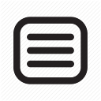

Proin quis tortor orci. Etiam at risus et justo dignissim congue. Donec congue lacinia dui, a porttitor lectus condimentum laoreet. Nunc eu ullamcorper orci. Quisque eget odio ac lectus vestibulum faucibus eget in metus. In pellentesque faucibus vestibulum. Nunc eu ullamcorper orci. Quisque egetNunc eu ullamcorper orci.
Redimensionnez la fenêtre pour voir le menu changer (Breakpoint à 980px).
J'ai utilisé une Media Query à 980px pour basculer l'affichage.
La difficulté principale est l'animation d'ouverture : comme on ne peut pas animer de height: 0 à height: auto en CSS, j'ai utilisé la propriété max-height pour créer l'effet de glissement (transition).
Un script simple écoute le clic sur le bouton burger pour ajouter/enlever la classe .open sur le header. J'ai aussi ajouté un écouteur sur les liens pour refermer le menu automatiquement après un clic, améliorant ainsi l'UX mobile.